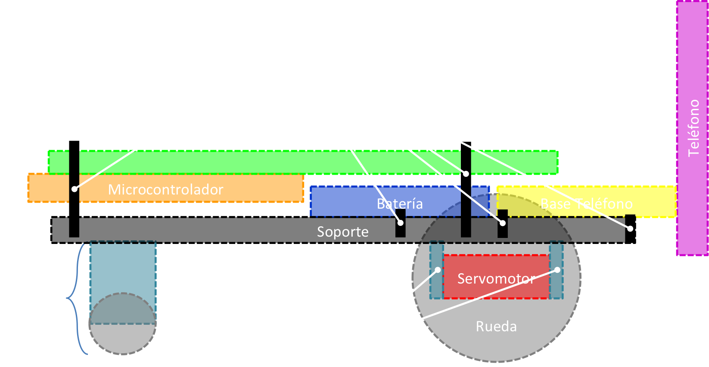

REPÚBLICA BOLIVARIANA DE VENEZUELA
UNIVERSIDAD NACIONAL EXPERIMENTAL DE GUAYANA
PLATAFORMA PARA PRÁCTICAS DE SISTEMAS DE CONTROL CON DISPOSITIVOS MÓVILES INTELIGENTES ANDROID PARA EL LABORATORIO DE AUTOMATIZACIÓN INDUSTRIAL DE LA UNIVERSIDAD NACIONAL EXPERIMENTAL DE GUAYANA (UNEG)
Comparativa de teléfonos inteligentes frente a otros tipos de teléfonos:
Usos actuales de los dispositivos móviles inteligentes:
GPS de excelente precisión.
Realizar y recibir pagos.
Interfaz de control en sistemas de domótica.
"Cerebro" de sistemas robóticos.
Realidad aumentada.
Dispositivos de monitoreo de salud y desempeño físico.
Laboratorio de Automatización Industrial
Automatización de procesos industriales.
Programación de microcontroladores.
Robótica.
Domótica.
Causas que originan el problema:
Pocas prácticas definidas.
Escasa documentación de fácil acceso.
Las plataformas actuales pueden quedar fuera de servicio por tiempos prolongados.
No permiten realizar prácticas con dispositivos móviles con sistema operativo Android.
Limitante en el rango te proyectos que se pueden desarrollar.
Objetivos y justificación
Objetivo general
“Proponer el desarrollo de una plataforma de prácticas de sistemas de control con dispositivos móviles inteligentes basados en el sistema operativo móvil Android para el Laboratorio de Automatización Industrial de la Universidad Nacional Experimental de Guayana (UNEG).”
Objetivos específicos
Diagnosticar la situación actual de las plataformas de prácticas...
Determinar los requerimientos del hardware y software para la...
Diseñar esquemas del hardware y software para la plataforma de...
Desarrollar el hardware y software de la plataforma de prácticas...
Justificación y delimitación
Marco Teórico
Marco Metodológico
ANÁLISIS, INTERPRETACIÓN Y PRESENTACIÓN DE LOS RESULTADOS
Fase 1: Determinación del Problema
Se realizó un diagnóstico al laboratorio de Automatización Industrial de la UNEG.
Conclusiones de la entrevista:
Áreas de interés: automatización, sistemas de control, robótica y domótica.
Sólo se dispone de plataformas para prácticas de proyectos industriales.
Al menos el 50% de los proyectos del laboratorio involucran microcontroladores en lugar de los PLC.
Es necesaria la integración de prácticas con diferentes sensores y actuadores.
Sólo en dos ocasiones se han desarrollado proyectos que involucren dispositivos móviles inteligentes.
Descripción de equipos:
Computadores personales.
PLC ControlLogix® de Allen-Bradley.
PLC Logo Siemens 230RC.
Kit de Robótica BOE-Bot Versión USB de Parallax.
Resultados de la fase 1:
Se propone una nueva plataforma
Fase 2: Documentación
Funcionalidades incorporadas en la plataforma:
Control digital y analógico de luces LED.
Lectura de entradas analógicas y digitales.
Lectura de sensores de distancia.
Lectura de sensor de temperatura.
Control de diferentes tipos de motores.
Uso de pantalla LCD.
Fase 3: Diseño de la propuesta
Requerimientos de hardware y software.
Diseño electrónico.
Diseño del soporte.
Requerimientos de Hardware
Características tomadas de las plataformas existentes.
Microcontrolador
Requerimientos de Software
Dialecto.
Comunicación USB y Bluetooth.
Representación lógica de cada componente.
Evitar envío de información irrelevante.
Asegurar que no exista pérdida de información enviada.
Debe funcionar con el sistema operativo Android.
Android
Distribución de SOM a nivel mundial:
Diseño electrónico
Diseño del soporte
Vista superior:
Diseño del soporte
Vista lateral:

Fases 4 y 5: Implementación de acciones y evaluación de los resultados obtenidos
Ensamblado de la placa.
Desarrollo del software.
Construcción del soporte.
Ensamblado de la placa
Vista inferior:
Ensamblado de la placa
Vista superior:
Desarrollo del software
Algoritmo de comunicación:
Desarrollo del software
Esquema de clases de la biblioteca de comunicación para Arduino:
Desarrollo del software
Esquema de clases de la biblioteca de comunicación para Android:
Construcción del soporte
Soporte acrílico:
Construcción del soporte
Soporte ensamblado con ruedas y otros periféricos: